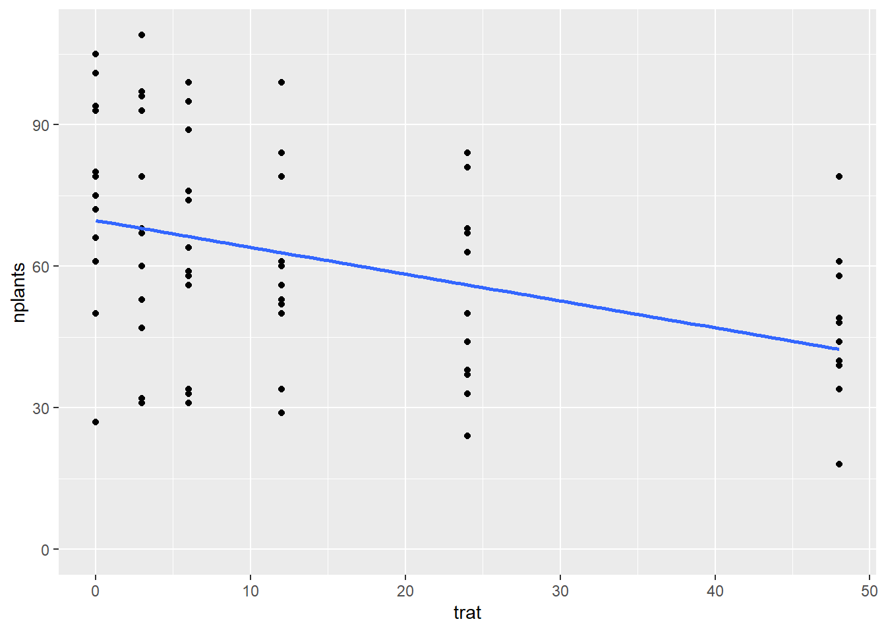
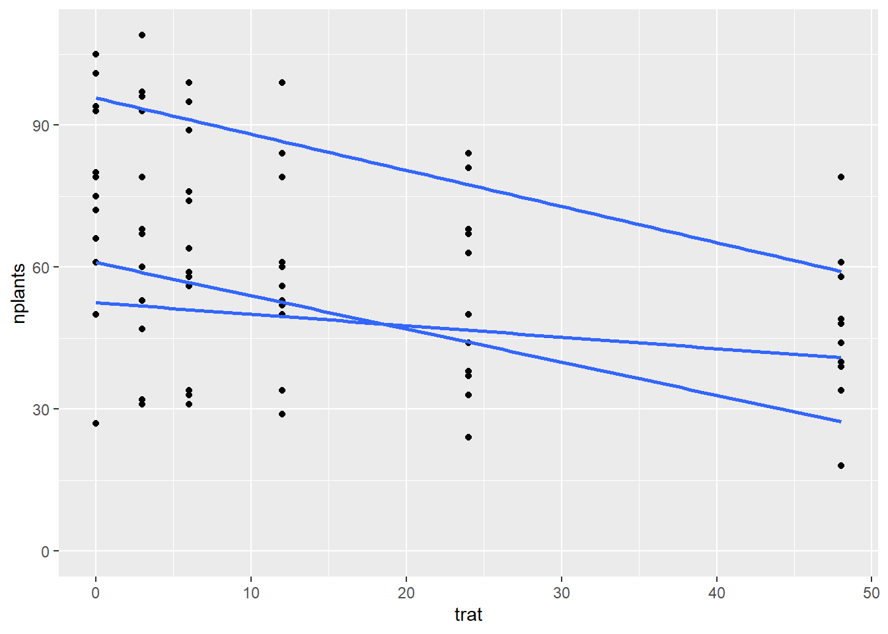

Análise de regressão estuda a relação entre uma variável dependente (resposta) e outras variáveis independentes (explicativas).Ela permite construir um modelo matemático que represente dois atributos x e y. A análise de regressão indica o efeito de uma mudança da unidade na variável explicativa (x) em relação a variável resposta (y). Ela descreve o efeito, por meio de uma equação, da variável explicativa em relação a variável resposta.
Já a correlação linear, resume (mensura) o grau de associação entre duas variáveis (x e y). Fornece um número que resume o grau de associação entre a duas variáveis.
Para fatores com níveis quantitavos se faz análise de regressão e não de média. Para essa aula, será feita análise de regressão (fator quantitativo). O objetivo é ajustar um modelo (função ou equação) teórico que permite estimar qualquer valor (3,2,2.6,6….). Nesse caso, queremos saber se há efeito significativo do inóculo na taxa de emergência, se não tiver efito, é observado uma linha reta, mas se tiver, a reta terá uma inclinação (snoop = coeficiente angular da reta). Se o snoop for zero, o ângulo é zero. O p-valor da regressão é se o snoop (diminuição ou aumento) é significativamente diferetne de zero.
O primeiro passo é fazer uma análise exploratório de representação com o gráfico geom_point, depois ajusta o modelo ao colocar a tendência (regressão linear) de primeira ordem (há dois parâmetros ou coeficientes).
Usar modelo misto ou simples, não os dois
library(readxl)library(tidyverse)library(dplyr)estande <-read_excel("dados-diversos.xlsx", "estande")estande |>ggplot(aes(trat, nplants,))+geom_point()+ylim(0, max(estande$nplants))+#linha de tendência é uma linha suavisada para ver o padrãogeom_smooth(se = F, method ="lm")

Modelo linear simples (fator fixo)
exp1 <- estande |>filter(exp ==1)# nplants é a respostam1 <-lm(nplants ~ trat, data = exp1)summary(m1)
Call:
lm(formula = nplants ~ trat, data = exp1)
Residuals:
Min 1Q Median 3Q Max
-25.500 -6.532 1.758 8.573 27.226
Coefficients:
Estimate Std. Error t value Pr(>|t|)
(Intercept) 52.5000 4.2044 12.487 1.84e-11 ***
trat -0.2419 0.1859 -1.301 0.207
---
Signif. codes: 0 '***' 0.001 '**' 0.01 '*' 0.05 '.' 0.1 ' ' 1
Residual standard error: 15 on 22 degrees of freedom
Multiple R-squared: 0.07148, Adjusted R-squared: 0.02928
F-statistic: 1.694 on 1 and 22 DF, p-value: 0.2066
exp2 <- estande |>filter(exp ==2)# nplants é a respostam2 <-lm(nplants ~ trat, data = exp2)summary(m2)
Call:
lm(formula = nplants ~ trat, data = exp2)
Residuals:
Min 1Q Median 3Q Max
-25.7816 -7.7150 0.5653 8.1929 19.2184
Coefficients:
Estimate Std. Error t value Pr(>|t|)
(Intercept) 60.9857 3.6304 16.798 4.93e-14 ***
trat -0.7007 0.1605 -4.365 0.000247 ***
---
Signif. codes: 0 '***' 0.001 '**' 0.01 '*' 0.05 '.' 0.1 ' ' 1
Residual standard error: 12.95 on 22 degrees of freedom
Multiple R-squared: 0.4641, Adjusted R-squared: 0.4398
F-statistic: 19.05 on 1 and 22 DF, p-value: 0.0002473
exp3 <- estande |>filter(exp ==3)# nplants é a respostam3 <-lm(nplants ~ trat, data = exp3)summary(m3)
Call:
lm(formula = nplants ~ trat, data = exp3)
Residuals:
Min 1Q Median 3Q Max
-26.5887 -3.9597 0.7177 5.5806 19.8952
Coefficients:
Estimate Std. Error t value Pr(>|t|)
(Intercept) 95.7500 2.9529 32.425 < 2e-16 ***
trat -0.7634 0.1306 -5.847 6.97e-06 ***
---
Signif. codes: 0 '***' 0.001 '**' 0.01 '*' 0.05 '.' 0.1 ' ' 1
Residual standard error: 10.53 on 22 degrees of freedom
Multiple R-squared: 0.6085, Adjusted R-squared: 0.5907
F-statistic: 34.19 on 1 and 22 DF, p-value: 6.968e-06
# Modelo de regressão linear simples: y= B0 + B1*X# B0 = beta zero (interceptor): é o valor no qual a linha ajsutada cruza o eixo Y. Interpretação: é o valor médio de resposta quando todas as variáveis explicativas são definidas como zero.No m3, se o trat (número de inóculos) for igual a zero, o valor médio seria 95.7500.# B1 = "trat" (a cada aumento de uma unidade do trat, espera-se uma diminuição média de -0.7634 (m3) no número de plantas (nplants))#x = variável explicativa#Adjusted R-squared: R², indica quantos porcento da variabilidade de y está sendo explicada por x.#Multiple R-squared: 0.6085 (m3): é uma medida que indica quão bem o medelo prevê os dados observados.# p-valor < 2e-16 *** (m3): é a probabilidade que a variável não seja relevante para o modelo. Quanto mais asterísticos presentes ao lado do efeito estimado, maior o nível de confiança com o que podemos afirmar que o efeito não é nulo. Ou seja, se o p-valor for menor que 0.05 a variável é significativa para o modelo, ou seja, as alterações na variável explicativa influenciam nas alterações da variável resposta. Se o p-valor for >0.05, sugere que as mudanças na variável explicativa não estão associadas as mudanças na variável resposta.#Residuals (m3): informações referente aos resíduos do modelo. É a diferença do valor previsto e o valor real.library(report)report(m1)
We fitted a linear model (estimated using OLS) to predict nplants with trat
(formula: nplants ~ trat). The model explains a statistically not significant
and weak proportion of variance (R2 = 0.07, F(1, 22) = 1.69, p = 0.207, adj. R2
= 0.03). The model's intercept, corresponding to trat = 0, is at 52.50 (95% CI
[43.78, 61.22], t(22) = 12.49, p < .001). Within this model:
- The effect of trat is statistically non-significant and negative (beta =
-0.24, 95% CI [-0.63, 0.14], t(22) = -1.30, p = 0.207; Std. beta = -0.27, 95%
CI [-0.69, 0.16])
Standardized parameters were obtained by fitting the model on a standardized
version of the dataset. 95% Confidence Intervals (CIs) and p-values were
computed using a Wald t-distribution approximation.
Tem fator fixo e aleatório. Junta os 3 experimentos em um modelo só e compara se houve significancia nos 3 ou não.
library(lme4)mix <-lmer(nplants ~ trat + (trat | exp),data = estande)summary(mix)
Linear mixed model fit by REML ['lmerMod']
Formula: nplants ~ trat + (trat | exp)
Data: estande
REML criterion at convergence: 580.8
Scaled residuals:
Min 1Q Median 3Q Max
-2.0988 -0.6091 0.1722 0.6360 1.9963
Random effects:
Groups Name Variance Std.Dev. Corr
exp (Intercept) 510.68405 22.5983
trat 0.05516 0.2349 -0.82
Residual 167.91303 12.9581
Number of obs: 72, groups: exp, 3
Fixed effects:
Estimate Std. Error t value
(Intercept) 69.7452 13.2146 5.278
trat -0.5687 0.1643 -3.462
Correlation of Fixed Effects:
(Intr)
trat -0.731
optimizer (nloptwrap) convergence code: 0 (OK)
Model failed to converge with max|grad| = 0.00274249 (tol = 0.002, component 1)
estande |>ggplot(aes(trat, nplants, group = exp))+geom_point()+ylim(0, max(estande$nplants))+#linha de tendência é uma linha suavisada para ver o padrãogeom_smooth(se = F, method ="lm")

Modelo GLM
Modelo linear é um caso especial do GLM
lm1 <-lm(nplants ~ trat, data = exp3)summary(lm1)
Call:
lm(formula = nplants ~ trat, data = exp3)
Residuals:
Min 1Q Median 3Q Max
-26.5887 -3.9597 0.7177 5.5806 19.8952
Coefficients:
Estimate Std. Error t value Pr(>|t|)
(Intercept) 95.7500 2.9529 32.425 < 2e-16 ***
trat -0.7634 0.1306 -5.847 6.97e-06 ***
---
Signif. codes: 0 '***' 0.001 '**' 0.01 '*' 0.05 '.' 0.1 ' ' 1
Residual standard error: 10.53 on 22 degrees of freedom
Multiple R-squared: 0.6085, Adjusted R-squared: 0.5907
F-statistic: 34.19 on 1 and 22 DF, p-value: 6.968e-06
# glm "gaussian" é o mesmo lm# "gaussian" é para dados contínuos, pode ser menor que zero# poisson# Ajustar o modelo aos dadosglm1 <-glm(nplants ~ trat, family ="gaussian",data = exp3)glm2 <-glm(nplants ~ trat, family ="poisson" (link ="log"),data = exp3)#Informação critério de arcaique - quanto menor o AIC, melhor o modeloAIC(glm1)
[1] 185.0449
AIC(glm2)
[1] 183.9324
summary(glm1)
Call:
glm(formula = nplants ~ trat, family = "gaussian", data = exp3)
Coefficients:
Estimate Std. Error t value Pr(>|t|)
(Intercept) 95.7500 2.9529 32.425 < 2e-16 ***
trat -0.7634 0.1306 -5.847 6.97e-06 ***
---
Signif. codes: 0 '***' 0.001 '**' 0.01 '*' 0.05 '.' 0.1 ' ' 1
(Dispersion parameter for gaussian family taken to be 110.9787)
Null deviance: 6235.8 on 23 degrees of freedom
Residual deviance: 2441.5 on 22 degrees of freedom
AIC: 185.04
Number of Fisher Scoring iterations: 2
summary(glm2)
Call:
glm(formula = nplants ~ trat, family = poisson(link = "log"),
data = exp3)
Coefficients:
Estimate Std. Error z value Pr(>|z|)
(Intercept) 4.571590 0.029539 154.762 < 2e-16 ***
trat -0.009965 0.001488 -6.697 2.13e-11 ***
---
Signif. codes: 0 '***' 0.001 '**' 0.01 '*' 0.05 '.' 0.1 ' ' 1
(Dispersion parameter for poisson family taken to be 1)
Null deviance: 77.906 on 23 degrees of freedom
Residual deviance: 29.952 on 22 degrees of freedom
AIC: 183.93
Number of Fisher Scoring iterations: 4